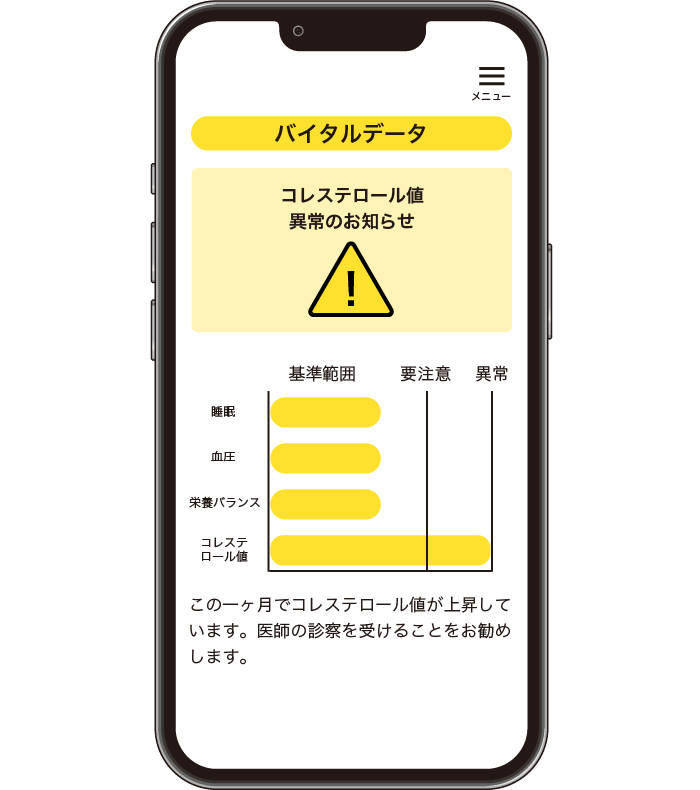

アプリ詳細
「pertri MEGURI」は、スーパーで真価を発揮します。
利用者の健康管理をするとともに、買い物をしながら
手に取った商品をセンサーが読み取り、足りない栄養や推奨献立をお伝えします。
さぁ、まずは専用のリーダーにかざしてお買い物を始めましょう。

01
健康管理ができる
まずは、基本情報を入力（家族構成や自身のアレルギー等で表示させたくない食べ物の登録等） あとは、スーパーの入り口で体をスキャン！ 日々の食事の管理、体調・体型管理がこのアプリで可能です。 血圧や体型について日々の推移、改善状況を見ることができます。
02
栄養素の把握
適した献立の提案
棚に設置されたセンサーであなたが何を取ったかをAIが把握！ 買い物をしながらご自身に足りない栄養素をリアルタイムで表示します。摂取すべき栄養素と食材を利用した献立をご提案します。 材料の案内だけでなく、スーパーの惣菜コーナーにおけるオススメも提示します。


03
体調不良の兆候は
見逃さない
「pertri MEGURI」はいくつかのバイタルデータを収集します。 日々のデータからいつもとは違う兆候が出た場合や、 不健康な食生活が続いた場合に利用者に注意喚起します。 健康アドバイザーがあなたのすぐ手元に
04
健康ポイントでお得に
健康的な食生活を目指すことで、”健康ポイント”を獲得することができます。 足りていない栄養素を元にあなたに合ったおすすめ食材・惣菜から健康ポイントを付与！ このポイントは「pertri MEGURI」を導入するスーパーで割引として活用することができます。